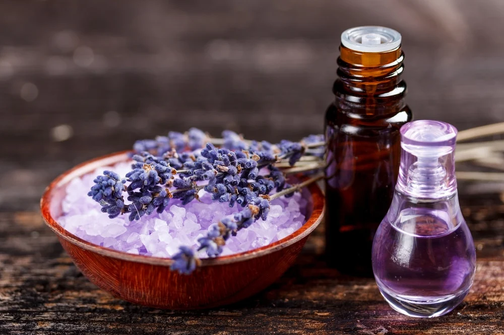

Como Fazer e usar o óleo de Lavanda

O óleo de lavanda é amplamente apreciado por suas propriedades calmantes, relaxantes e terapêuticas. Extraído das flores da Lavandula angustifolia, o óleo de lavanda é conhecido por seu aroma suave e floral, sendo um dos óleos essenciais mais versáteis e populares na aromaterapia. Além de suas propriedades relaxantes, o óleo de lavanda também possui efeitos antissépticos, anti-inflamatórios e cicatrizantes, tornando-o um excelente aliado nos cuidados com a pele, cabelo e na promoção do bem-estar geral.
Como fazer óleo de lavanda em casa
Embora o óleo essencial de lavanda puro seja produzido por destilação a vapor, você pode preparar uma versão caseira infundida com flores de lavanda para capturar parte de seu aroma e benefícios. Aqui está um guia simples para fazer o seu próprio óleo de lavanda em casa:
Materiais
1 xícara de flores secas de lavanda (de preferência orgânicas).
Óleo base (como azeite de oliva, óleo de jojoba ou óleo de amêndoas doces).
Modo de preparo:
Coloque as flores secas de lavanda em um frasco de vidro limpo e seco. Certifique-se de que o frasco tenha uma tampa bem vedada para evitar a entrada de ar.
Despeje o óleo base sobre as flores de lavanda, garantindo que fiquem completamente submersas. Deixe cerca de 2 cm de espaço no topo do frasco.
Feche o frasco e agite suavemente para misturar bem o óleo com as flores.
Coloque o frasco em um local quente e ensolarado, como uma janela, por cerca de 2 a 4 semanas. Agite o frasco suavemente todos os dias para ajudar a infundir o óleo com o aroma e as propriedades das flores de lavanda.
Após o período de infusão, coe o óleo usando um pano de musselina ou um coador fino para separar as flores do óleo. Pressione as flores para extrair o máximo de óleo possível.
Transfira o óleo de lavanda infundido para um frasco de vidro escuro e limpo para armazenamento. Mantenha o óleo em um local fresco e escuro para prolongar sua durabilidade. Ele pode ser armazenado por até seis meses.
Como usar o óleo de lavanda
O óleo de lavanda é extremamente versátil e pode ser utilizado de várias maneiras para aproveitar seus múltiplos benefícios:
Aromaterapia: O óleo de lavanda é amplamente utilizado na aromaterapia por suas propriedades calmantes e relaxantes. Para criar um ambiente tranquilo e promover o relaxamento, adicione algumas gotas de óleo de lavanda a um difusor de aroma ou queimador de óleo. Seu aroma suave pode ajudar a aliviar o estresse, reduzir a ansiedade e melhorar a qualidade do sono.
Cuidados com a pele:O óleo de lavanda é ótimo para tratar pequenas queimaduras, cortes e picadas de insetos devido às suas propriedades antissépticas e anti-inflamatórias. Dilua o óleo de lavanda em um óleo base (como óleo de coco ou amêndoas doces) e aplique suavemente na área afetada para promover a cicatrização e aliviar a irritação.
Tratamentos para o cabelo: Use o óleo de lavanda para melhorar a saúde do cabelo e do couro cabeludo. Adicione algumas gotas ao seu shampoo ou condicionador para ajudar a fortalecer os fios e promover um couro cabeludo saudável. Para um tratamento mais profundo, misture o óleo de lavanda com um óleo base e massageie no couro cabeludo para nutrir e estimular o crescimento do cabelo.
Massagens relaxantes:O óleo de lavanda é excelente para massagens relaxantes devido ao seu efeito calmante nos músculos e na mente. Misture o óleo de lavanda com um óleo transportador e aplique durante uma massagem para aliviar a tensão muscular e promover o relaxamento geral.
Banhos relaxantes:Para um banho relaxante, adicione algumas gotas de óleo de lavanda à água da banheira. O calor do banho ajudará a liberar o aroma calmante do óleo, proporcionando uma experiência de spa em casa que ajuda a aliviar o estresse e a tensão.
Cuidados ao usar o óleo de lavanda
Embora o óleo de lavanda seja seguro para a maioria das pessoas, é sempre importante realizar um teste de alergia antes de usar qualquer óleo essencial na pele. Aplique uma pequena quantidade de óleo diluído no antebraço e aguarde 24 horas para observar se há alguma reação adversa. Mulheres grávidas, lactantes e pessoas com pele sensível devem consultar um profissional de saúde antes de usar o óleo de lavanda. Utilize o óleo de lavanda como um complemento em sua rotina de cuidados pessoais para desfrutar de seus benefícios aromáticos e terapêuticos, sempre respeitando as instruções de uso e dosagens recomendadas.